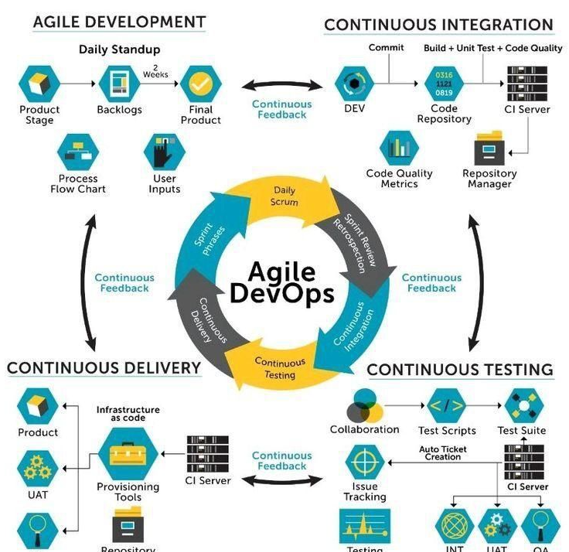

|  |
Our StyleAgile all the way! We strive to work in an agile devops environment where we are always moving. When we agree to partner on a project whether it be new or maintenance, we always ensure we are in alignment with how we approach the integration service development, testing, deployment and delivery. At the time, we agree on a sprint cadence, stand-up times and participants and determine roles and responsibilities. This way everyone is clear from the get-go who is who in the zoo! |